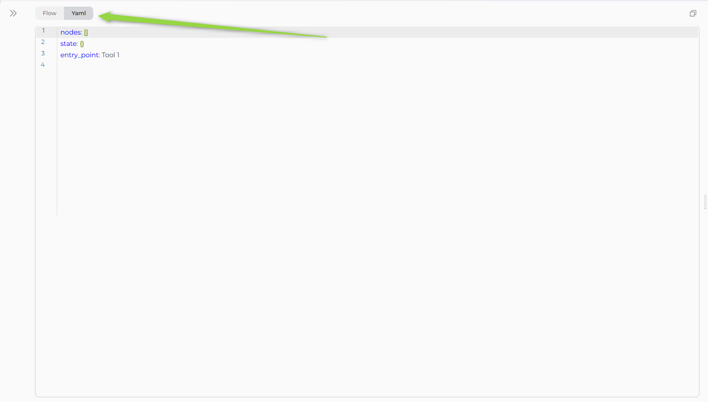
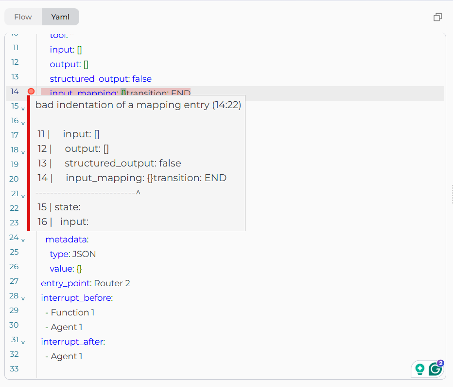

YAML Configuration¶
YAML view provides code-based pipeline configuration with advanced control over definitions, schemas, and patterns.
Target Audience
For advanced users who prefer code editing or need version-controlled pipeline definitions.
What is YAML View¶
A code editor for pipelines in the Configuration tab (alongside Flow Editor) that provides direct access to pipeline YAML definitions.
Features:
- Instant Flow Sync: Changes sync instantly between YAML and Flow views
- Syntax Highlighting: Color-coded YAML structure with CodeMirror
- Real-time Validation: Immediate error feedback
- Find & Replace:
Ctrl+F(Windows) or⌘+F(Mac) - Version Control: Copy/paste YAML for backup or sharing

Schema Structure¶
Every pipeline has three required top-level sections:
entry_point: <node_id> # Required
state: {...} # Required
nodes: [...] # Required
| Field | Type | Required | Description |
|---|---|---|---|
entry_point |
String | ✔️ | Starting node ID |
state |
Object | ✔️ | State variable definitions |
nodes |
Array | ✔️ | Node configurations |
State Configuration¶
Defines all variables used across the pipeline. Each has a type and optional default value.
State Syntax¶
state:
<variable_name>:
type: <data_type>
value: <default_value> # Optional
Default Variables
Default variables like input and messages don't require initial values—they are populated during pipeline execution.
Data Types:
| Type | Example |
|---|---|
string |
"Hello" |
number |
42, 3.14 |
list |
[], ["a", "b"] |
JSON |
{}, {"key": "value"} |
Example:
state:
input:
type: string
counter:
type: number
value: 0
qna_list:
type: list
value: []
metadata:
type: JSON
value: {}
Guidelines
- Use descriptive names (
user_queryvsq) - Initialize accumulators (
'',[],0) - See States Guide for details
Node Configuration¶
The nodes array contains all pipeline nodes with common structure plus node-specific fields.
Common Fields (all nodes):
| Field | Type | Required | Description |
|---|---|---|---|
id |
String | ✔️ | Unique node identifier |
type |
String | ✔️ | Node type (see overview) |
input |
Array | ✔️ | State variables to read |
output |
Array | ✔️ | State variables to write |
transition |
String | Conditional | Next node ID (not needed with condition, decision, or END) |
Node-Type-Specific Configurations¶
Complete configurations for all 13 node types. See Nodes Overview for detailed documentation.
1. LLM Node¶
Calls language models with system/task prompts.
- id: Summarizer
type: llm
prompt:
type: string
value: ''
input: [article_text]
output: [messages]
structured_output: false
transition: NextNode
input_mapping:
system:
type: fixed
value: "You are an expert summarizer"
task:
type: fstring
value: "Summarize: {article_text}"
chat_history:
type: fixed
value: []
tool_names: # Optional
toolkit_name:
- tool1
Mapping Types: fixed (static), variable (state reference), fstring (template with {var})
2. Agent Node¶
Executes pre-configured agents.
- id: Agent 1
type: agent
input:
- input
output:
- metadata
transition: END
input_mapping:
task:
type: fstring
value: ''
chat_history:
type: fixed
value: []
tool: Github
3. Function Node¶
Executes single toolkit function.
- id: Function 1
type: function
tool: read_page_by_id
input:
- counter
output:
- metadata
structured_output: false
input_mapping:
skip_images:
type: fixed
value: false
page_id:
type: fixed
value: ''
transition: END
toolkit_name: ELITEATEST
4. Tool Node¶
Executes multiple toolkit functions.
- id: MultiTool
type: tool
tool: ["function1", "function2"]
toolkit_name: MyToolkit
input: [input_data]
output: [tool_results]
structured_output: false
input_mapping:
param1:
type: variable
value: input_data
transition: END
5. Code Node¶
Executes Python in sandbox.
- id: DataProcessor
type: code
code:
type: fixed
value: |
# Access state
input_text = alita_state.get('input')
# Return dict to update state
{"processed": input_text.upper()}
input: [input]
output: [processed_data]
structured_output: true
transition: END
Code Node Rules
Use alita_state.get('var') to access state variables, return dict with structured_output: true
6. Router Node¶
Template-based routing with Jinja2.
- id: CategoryRouter
type: router
default_output: DefaultNode
routes: [ProcessA, ProcessB, END]
input: [category]
condition: |
{% if category == 'urgent' %}
ProcessA
{% elif category == 'normal' %}
ProcessB
{% else %}
END
{% endif %}
7. Condition Node¶
Boolean-based routing.
- id: ApprovalCheck
type: condition
input: [input, branches]
output: [branches]
condition:
condition_definition: |
{% if 'approved' in input|lower %}
PublishNode
{% else %}
ReviewNode
{% endif %}
condition_input: [input, branches]
conditional_outputs: [PublishNode]
default_output: ReviewNode
8. Decision Node¶
LLM-powered routing.
- id: SmartRouter
type: decision
input: [user_input]
output: [classification]
decision:
description: |
Route to SaveNode if user wants to save,
otherwise END
decisional_inputs: [user_input]
nodes: [SaveNode]
default_output: END
tool_names: # Optional
toolkit1: [tool_a]
9. Loop Node¶
Iterates over task list.
- id: ProcessItems
type: loop
input: [item_list]
output: [processed_items]
transition: SummaryNode
input_mapping:
task_instructions:
type: fixed
value: "Process each item"
variables_mapping:
type: fixed
value:
items: item_list
10. Loop from Tool Node¶
Iterates over toolkit results.
- id: ProcessSearchResults
type: loop_from_tool
tool: search_index
toolkit_name: EPMALTA
input: [query]
output: [all_results]
transition: AggregateResults
input_mapping:
task_instructions:
type: fixed
value: "Analyze each result"
variables_mapping:
type: fixed
value:
results: search_results
query:
type: variable
value: query
Required Mapping
variables_mapping is critical—see Iteration Nodes
11. State Modifier Node¶
Transforms state with Jinja2 templates.
- id: IncrementCounter
type: state_modifier
template: '{{ index + 1 }}'
variables_to_clean: []
input: [index]
output: [index]
transition: NextNode
Advanced Example:
- id: AggregateResponse
type: state_modifier
template: |
{{ response_full }}
## Question {{index}}
{{question}}
## Answer {{index}}
{{messages[-1].content }}
variables_to_clean: []
input: [response_full, messages, question, index]
output: [response_full]
transition: NextStep
12. Pipeline Node¶
Executes nested pipelines.
- id: RunSubPipeline
type: pipeline
tool: "Baseline Automation assessment"
input: []
output: []
transition: NextNode
Entry Point¶
Specifies the first node to execute.
entry_point: StartNode
nodes:
- id: StartNode
type: llm
# ...
Rules
Must reference existing node ID; only one per pipeline; Router/Condition nodes cannot be entry points
Interrupts¶
Defines pause points for user input. See Nodes Connectors.
interrupt_after:
- ReviewNode
- ApprovalCheck
nodes:
- id: ReviewNode
type: llm
transition: NextNode
Use Cases
Human-in-the-loop workflows, review checkpoints, approval gates
Connections¶
Nodes connect via transition, condition, decision, or routes. See Nodes Connectors.
Simple Transition:
- id: Step1
type: llm
transition: Step2
- id: Step2
type: function
transition: END
Router:
nodes:
- id: CategoryRouter
type: router
default_output: DefaultNode
routes:
- ProcessA
- ProcessB
condition: |
{% if category == 'urgent' %}
ProcessA
{% else %}
ProcessB
{% endif %}
Condition:
nodes:
- id: CheckApproval
type: condition
condition:
condition_definition: |
{% if 'approved' in input|lower %}
PublishNode
{% else %}
ReviewNode
{% endif %}
conditional_outputs:
- PublishNode
default_output: ReviewNode
Decision:
nodes:
- id: SmartRouter
type: decision
decision:
description: "Route based on user intent"
nodes:
- SaveNode
- ProcessNode
default_output: END
Editor Features¶
CodeMirror Capabilities:
- Syntax highlighting with color-coded structure
- Error detection (red underlines for invalid YAML)
- Auto-indentation for nested structures
- Line numbers for navigation
- Find & Replace:
Ctrl+F(Windows) /⌘+F(Mac)

Two-Way Sync:
Changes sync instantly between YAML and Flow Editor.
- YAML → Flow: Add node in YAML → appears in Flow canvas
- Flow → YAML: Add node via Flow
+button → YAML updates automatically
Workflow
Start in Flow for layout → switch to YAML for bulk edits → copy YAML for version control
YAML Guide¶
Syntax Rules¶
Indentation (use spaces, not tabs):
✔️ Correct:
nodes:
- id: Node1
type: llm
input:
- var1
✘ Incorrect (mixed spaces/tabs):
nodes:
- id: Node1
type: llm # Tab used instead of spaces
Strings with Special Characters¶
✔️ Correct:
template: '{{ index + 1 }}'
description: "Route: urgent"
value: |
Multi-line
content
✘ Wrong:
template: {{ index + 1 }}
description: Route: urgent
Lists (use block style):
✔️ Correct:
input: [var1, var2]
routes:
- NodeA
- NodeB
✘ Avoid inline for readability
Booleans/Null (lowercase):
✔️ Correct:
structured_output: true
structured_output: false
value: null
✘ Wrong:
structured_output: True
value: None
Common Errors¶
Missing Quotes:
✘ condition: {% if approved %}
✔️ condition: '{% if approved %}'
Undefined Node:
✘ transition: NonExistentNode
✔️ Ensure node exists in nodes array
Invalid Type:
✘ type: invalid_type
✔️ type: llm # Use: llm, agent, function, tool, code, custom, router, condition, decision, loop, loop_from_tool, state_modifier, pipeline
Missing Fields:
✘ nodes:
- id: Node1
type: llm
✔️ Add: input, output, transition
Validation Checklist¶
Before saving:
- [ ] Entry point references existing node ID
- [ ] All node IDs are unique
- [ ] All transitions reference existing nodes or END
- [ ] State variables in nodes are defined in
state - [ ] Input/output arrays use valid variable names
- [ ] Node-specific fields complete (e.g., LLM has
input_mapping) - [ ] No YAML syntax errors (red underlines)
- [ ] Indentation uses spaces
- [ ] Quotes around special characters (
:,{,%)
Best Practices¶
Use Descriptive IDs:
✔️ - id: FetchUserData
✘ - id: Node1
Initialize Defaults:
✔️ counter: {type: number, value: 0}
✘ counter: {type: number}
Multi-Line Templates:
✔️ template: |
{% if condition %}NodeA{% else %}NodeB{% endif %}
✘ template: '{% if condition %}NodeA{% else %}NodeB{% endif %}'
Group Nodes:
nodes:
# Data Loading
- id: LoadData
# Processing
- id: ProcessData
Don't Hardcode Secrets:
✘ api_key: {type: fixed, value: "sk-123"}
✔️ Use Credentials instead
Avoid Unreachable Nodes:
✘ - id: Node1
transition: Node3
- id: Node2 # Unreachable
Always Terminate:
✔️ - id: FinalNode
transition: END
Workflow Tips¶
- Start Visual, Refine in Code: Use Flow Editor for layout → YAML for bulk edits
- Bulk Updates: Find/replace to update toolkit names, node IDs
- Test Incrementally: Add one node at a time, run pipeline after each
- Version Control: Copy YAML to files, commit to git
- Use Comments:
# Step 1: Load data - id: LoadData
Related Documentation¶
- Flow Editor - Visual pipeline building
- States - State variable design
- Nodes Overview - All node types
- Nodes Connectors - Connection patterns
- Entry Point - Entry point rules
- Interaction Nodes - LLM, Agent
- Execution Nodes - Function, Tool, Code nodes
- Control Flow Nodes - Router, Condition, Decision
- Iteration Nodes - Loop nodes
- Utility Nodes - State Modifier, Pipeline